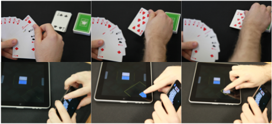

We are developing new methods for trans-surface interaction, that is interaction across multi-touch surfaces. Embodied cognition is key. We inform our designs through the use of culturally based design, a method that draws from the embodied experiences of activities embedded in culture. By mimicking these well established activities, interactions activate people's embodied mental models.  This makes the interactions intuitive and familiar, as they draw from prior experiences. Our culturally based designs draw a variety of contexts, ranging from card playing to sharing and exchanging photographs.
Our long term objective is to give people interactive experiences in which embodied gestures performed by the human hand are mapped to actions in ways that are natural, meaningful and intuitive.
publications
 Kerne, A., Hamilton, W., Toups, Z.
Culturally Based Design: Embodying Trans-Surface Interaction in Rummy,
Proc CSCW 2012, 509-518 [top 9%].
Kerne, A., Hamilton, W., Toups, Z.
Culturally Based Design: Embodying Trans-Surface Interaction in Rummy,
Proc CSCW 2012, 509-518 [top 9%].